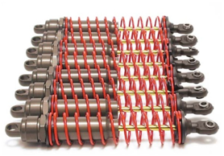
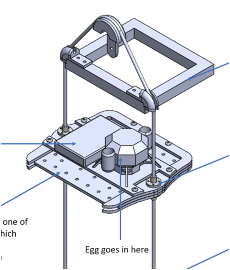
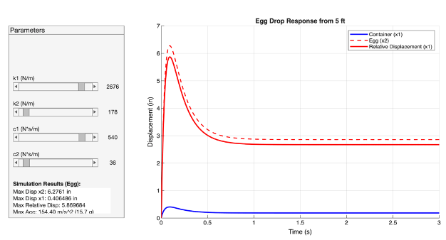
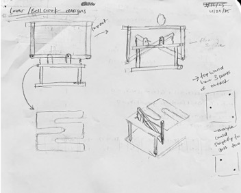
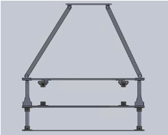
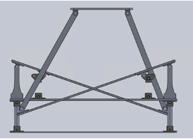
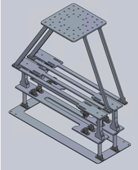
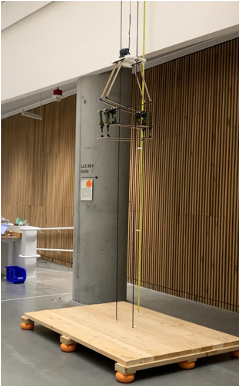
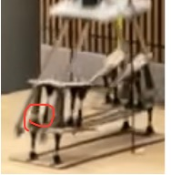

Problem Statement

Provided shocks

Contraption carriage system
Build a contraption that connects to the bottom of a carriage system and prevents the egg from cracking when dropped from the tallest height — using only the provided springs, dampers, and plywood.
Ideas and Prototyping

2-DOF response analysis in MATLAB

Sketches

Side view with no compression

Side view with expected compression
We modeled the situation as a 2-DOF system. With MATLAB, we found that the spring and damping coefficients of the second layer were most significant: as each coefficient increases, the max acceleration and displacement increase.
Our biggest focus was to increase deceleration distance of the egg while decreasing spring compression to prevent bottoming-out. We approached this by incorporating levers in our design.
Challenges
We faced the following challenges, which led to design iterations:
- Since the shocks can only compress, not extend, we had to flip where the shock was relative to the pivot.
- Spring and damping coefficients were too low. We doubled the number of shocks.
- We added slots for the connection between shock and lever so that the shocks could stay vertical as the lever pressed down.
- There were restrictions on how far back the contraption could extend, so the design had to be asymmetrical to still maximize the lever length.
Results

Final CAD

Competition day

Failure
Overall, there were many weak points that we didn't have time to flesh out. Our major failure point was our 3D prints, which we printed with poor orientation, resulting in immediate separation of layers. We also didn't account for the additional weight that all the hardware would add.